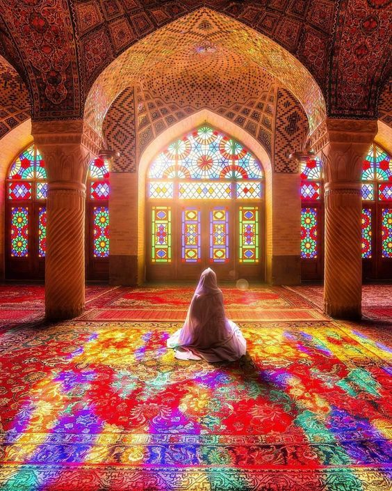
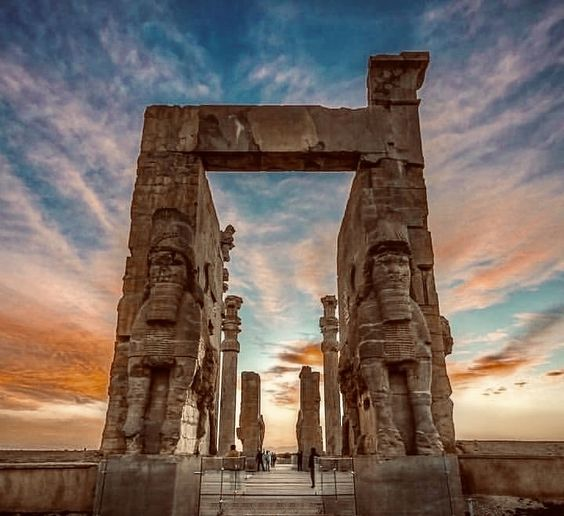
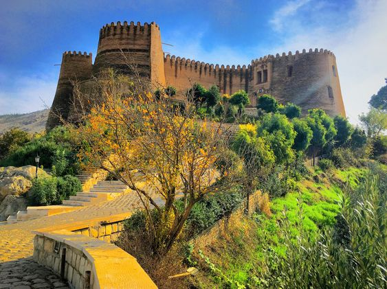

تورهای داخلی
-

استان اصفهان
انه ملا باشی اصفهان یک اقامتگاه تاریخی است که در سال ۱۳۸۱ به عنوان میراث ملی به ثبت رسیده و در مرکز شهر اصفهان، در خیابان هشت بهشت واقع شده است. خانه ملاباشی معروف به خانه معتمدی (در دهه گذشته متعلق به خانواده بوده است) شامل آثاری از دوران صفویه، زند و قاجار است. شیشه های رنگی و دیوارهای آینه ای بخشی از معماری برجسته این خانه است
-

استان شیراز
حافظیه یا آرامگاه حافظ (گشایش: ۸۵۶ ه.ق – ۱۴۵۲ م)، محل خاکسپاری حافظ شیرازی در شیراز است. این بنا به فرمان رضاشاه به علیاصغر حکمت، وزیر آموزش و پرورش وقت و برپایهٔ طرحی از آندره گُدار طراحی و بازسازی شد. مجری آن، علی ریاضی، رئیس اداره آموزش و پرورش فارس، و سرپرستش علی سامی بودند. حافظیه بارها از سوی حاکمان تیموری، صفوی، افشار و زند بازسازی و مرمت شد.
-

استان لرستان
خرمآباد در استان لرستان است. فلکالافلاک با نام قلعهٔ دوازدهبُرجی هم شناخته میشود. این بنا بر فراز تپهای مشرف به شهر خرمآباد و در نزدیکی رودخانه، در مرکز شهر قرار گرفته و چشمگیرترین اثر تاریخی و گردشگری در این شهر است. تاریخ ساخت این قلعه به دورهٔ ساسانیان بازمیگردد. این بنا در تاریخ ۱۰ مهر ۱۳۴۸ با شمارهٔ ثبت ۸۸۳ در فهرست آثار ملی ایران به ثبت رسیدهاست